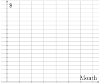

In the real world, it is more common to have data that is approximately linear than exactly linear. These activities will introduce the idea of linear trends, which we’ll spend more time in class. They’ll also provide practice with building a linear model by identifying its slope and vertical intercept.
Prep Activity2.3.1.
Several years ago, Onondaga Community College, in upstate New York, introduced a meal plan that included "Flex Dollars" that were stored on students’ ID cards. Each student was given $150 "Flex Dollars" as part of their meal plan package that could be used like cash at several campus dining locations.
Onondaga student Loralee tracked her use of flex dollars weekly during the fall semester as shown in the table below:
Week
Balance ($)
0
150.00
1
146.75
2
142.75
3
139.00
4
134.00
5
130.25
6
126.25
7
122.25
8
118.50
9
114.50
10
110.00
11
106.50
12
101.50
13
97.00
14
93.25
Table2.3.1.Loralee’s Flex Dollars Balance
Blank axes. The horizontal axis is labeled Week and ranges from 0 to 14. The vertical axis is labeled $ and ranges from 90 to 155.
Figure2.3.2.Loralee’s Flex Dollars Balance
(a)
Make a graph of the amount of money left on Loralee’s card over the semester.
(b)
This model is approximately linear. What are the units for the slope: $, Week/$, $/Week, or there are no units.
(c)
What is the vertical intercept tell you in context? the horizontal intercept?
(d)
Let \(M\) be the amount of money left on the card, \(t\) weeks after the beginning of the semester. Write a linear equation to model the data. Use Week 0 and Week 14 to calculate the slope.
(e)
If Loralee continues to spend her flex dollars at the same rate, use your equation to determine how much money will be on the card at the end of spring semester, which also lasts 14 weeks.
Prep Activity2.3.2.
Smartphones, like many other manufactured goods, depreciate on a daily basis. Depreciation means how much an item (e.g. a smartphone) loses in value compared to the price that was originally paid for it from the manufacturer. There tends to be two main periods in a smartphone’s life when it sees the biggest drops in value: 1. the period of time after the phone is initially purchased, and 2. when the manufacturer launches a new model.
In September 2019, the iPhone 11 256GB was released with a price of $849. Twelve months after the launch, it was found that the value of iPhone 11s depreciated about 37% (which is actually better than most smartphone depreciation!). 1
Suppose Coraline bought a new iPhone 11 256GB in September 2019 for $849. The phone would soon start depreciating in value. The following table shows the approximate value of her iPhone 11, by month from September 2019.
Table2.3.3.Value of Coraline’s iPhone 11
Month
Sept 2019
Oct 2019
Nov 2019
Dec 2019
Jan 2020
Feb 2020
Value ($)
849
800
780
750
720
699
(a)
It can be easier to work with models when the data are numerical. Modify the first row of the table to change the months into numbers. There isn’t a "right" way to do this, although it is important that Jan 2020’s number be bigger than Dec 2019’s.
Table2.3.4.Value of Coraline’s iPhone 11
Month
Value ($)
849
800
780
750
720
699
(b)
Now, use the table from the previous question to create a graph of the data. Remember to label the axes.

Blank axes. The horizontal axis is labeled Month but has no other labels. The vertical axis is labeled $ but has no other labels.
Figure2.3.5.Loralee’s Flex Dollars Balance
(c)
Is the data perfectly linear? Explain your answer.
(d)
Why does the data appear to be approximately linear? Explain your answer
Prep Activity2.3.3.
Let’s continue analyzing the depreciation of Coraline’s phone.
(a)
Give an estimate for the slope of the model, and explain what it means in this situation.
(b)
What is the vertical intercept of the graph? What does it mean in relation to the situation?
(c)
Write an equation that gives a linear model for the value of the cell phone from Sept 2019 through February 2020. Use \(V\) for the value in dollars, \(m\) for the number of the month, and your slope estimate.
(d)
Suppose Coraline wants to sell her phone before it is worth less than $300. Using your model, when is the last month she could sell it and get at least $300?
(e)
What is the horizontal intercept of your model? What is the meaning of this in the context of this problem? Is this reasonable?
Prep Activity2.3.4.
You’ll need to be able to do the following things for this lesson. Rate how confident you are on a scale of 1 - 5 (1 = not confident and 5 = very confident).
Table2.3.6.
Skill or Concept: I can …
Rating from 1 to 5
Identify the slope and the vertical intercept of a linear equation.
Identify when data is not perfectly linear, but is approximately linear.